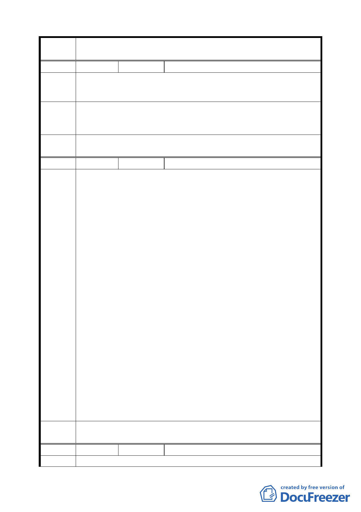

案 名 配合第二代展會中心變更臺北市南港經貿園區特定專用區 C12、
C13 街廓商業區及周邊商業區細部計畫案
編號 ４
陳情人 江輝吉
陳 情 理 C13 街廓（原計畫係供商務設施使用）新計畫為綠地編定為 A 區
由 極不適宜，容積僅 225％難以更新。
建議辦
法
本街廓係南港早期人文商業最發達的地區，且土地建物持分人不
同，不易整合更新。請提高容積率為 300％，以利二代館周邊繁
榮。
委員會
決議
本地區已大幅提高更新地區整併之容積獎勵，可達繁榮周邊之效。
編號 ５
陳情人 闕貴卿、詹坤隆、陳金賜
建議一：A 區容積不宜移至 B、C 區。
理由：B、C 區建蔽率為 45％，A 區容積移入，勢必蓋出更高的樓
層以消化更多之容積，相對的，住戶持有之土地面積較少，
B、C 區住戶深感權益受損而反對。
建議二：B、C 區都更面積請維持原面臨 2 個街廓為 1000 平方公
尺其餘為 2000 平方公尺以上為開發面積，較易整合改建。
理由：本區 2 分之 1 以上住戶產權分開（即土地及建物所有權人
各異）整合難度甚高，若 B、C 區各採整體規劃，小區塊分
期開發將可克服此問題，而提高住戶改建之意願。
建議三：請維持 20％停車獎勵，提高住戶改建之意願
建議辦
法
住大樓負擔高額管理費乃天經地義之事，但老一輩長者因
此大大降低改建的意願，若獎勵維持，多餘停車費之收益
將可降低管理費而提高住戶參與改建之看法。
建議四：96 年 8 月 28 日都發局列出三大類優先釋出容積及調整
容積率。
96 年 11 月 10 日行政院推動之南港高鐵沿線的四大金磚
旗艦示範計畫。
96 年 11 月 15 日行政院針對高鐵捷運鐵路場站 400 公尺
範圍內面積達 5000 平方公尺以上者都更容積率放寬兩
倍之細部計畫。
南港地區不斷釋出利多，請儘速公布計畫內容以利都更改建之推
動，規定太多，門檻太高，使參與者有「望餅興嘆」之虞，將失
政府一番美意，而流於空談，不如釋出更多的容積較實在。
委員會
決議
本地區已提高更新地區整併之容積獎勵，可達繁榮周邊之效。
編號 ６
陳情人 陳澄雄 君等 16 人
陳 情 理 一、經查 貴府於 85.09.26 府都二字第 85067435 號函公告之「擬
4